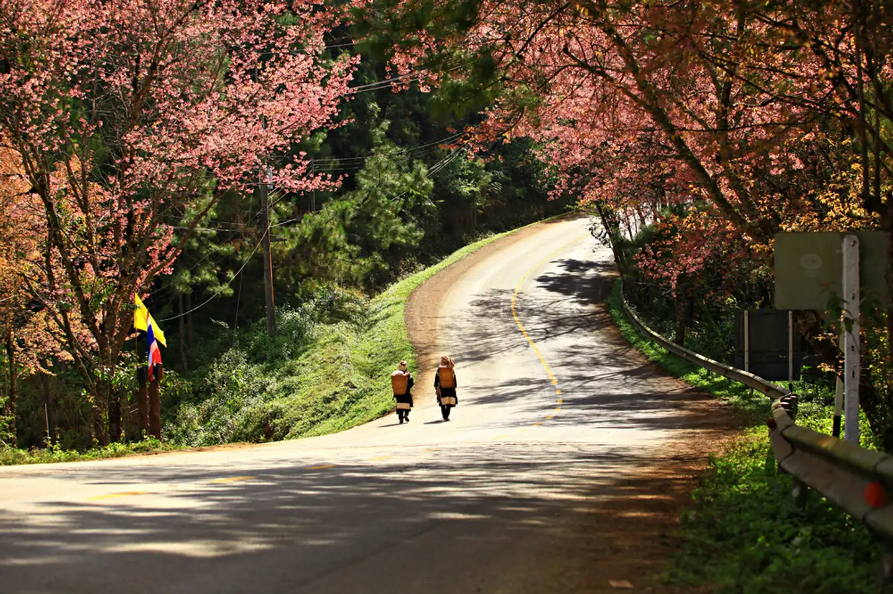

<!doctype html>
<html lang="en">

<head>
    <meta charset="utf-8">
    <meta name="viewport" content="width=device-width, initial-scale=1">
    <title>Travel</title>
    <link rel="stylesheet" href="/about.css">
    <link rel="stylesheet" href="https://cdnjs.cloudflare.com/ajax/libs/animate.css/4.1.1/animate.min.css" />
    <link rel="stylesheet" href="https://cdnjs.cloudflare.com/ajax/libs/animate.css/4.1.1/animate.min.css">
    <link href="https://cdn.jsdelivr.net/npm/bootstrap@5.3.2/dist/css/bootstrap.min.css" rel="stylesheet" integrity="sha384-T3c6CoIi6uLrA9TneNEoa7RxnatzjcDSCmG1MXxSR1GAsXEV/Dwwykc2MPK8M2HN" crossorigin="anonymous">
</head>

<body>
    <link rel="stylesheet" href="/header.css">
    <script src="https://cdn.jsdelivr.net/npm/bootstrap@5.3.2/dist/js/bootstrap.bundle.min.js" integrity="sha384-C6RzsynM9kWDrMNeT87bh95OGNyZPhcTNXj1NW7RuBCsyN/o0jlpcV8Qyq46cDfL" crossorigin="anonymous"></script>
</body>

</html>
<style>
    @import url('https://fonts.googleapis.com/css2?family=Kanit:wght@500&display=swap');
    
    *{
        font-family: 'Kanit', sans-serif;
    }

    x .bd-placeholder-img {
        font-size: 1.125rem;
        text-anchor: middle;
        -webkit-user-select: none;
        -moz-user-select: none;
        user-select: none;
    }
    
    @media (min-width: 768px) {
        .bd-placeholder-img-lg {
            font-size: 3.5rem;
        }
    }
    
    .b-example-divider {
        height: 3rem;
        background-color: rgba(0, 0, 0, .1);
        border: solid rgba(0, 0, 0, .15);
        border-width: 1px 0;
        box-shadow: inset 0 .5em 1.5em rgba(0, 0, 0, .1), inset 0 .125em .5em rgba(0, 0, 0, .15);
    }
    
    .b-example-vr {
        flex-shrink: 0;
        width: 1.5rem;
        height: 100vh;
    }
    
    .bi {
        vertical-align: -.125em;
        fill: currentColor;
    }
    
    .nav-scroller {
        position: relative;
        z-index: 2;
        height: 2.75rem;
        overflow-y: hidden;
    }
    
    .nav-scroller .nav {
        display: flex;
        flex-wrap: nowrap;
        padding-bottom: 1rem;
        margin-top: -1px;
        overflow-x: auto;
        text-align: center;
        white-space: nowrap;
        -webkit-overflow-scrolling: touch;
    }
</style>
</head>
<title>Travel</title>
<path fill-rule="evenodd" clip-rule="evenodd" d="M24.509 0c-6.733 0-11.715 5.893-11.492 12.284.214 6.14-.064 14.092-2.066 20.577C8.943 39.365 5.547 43.485 0 44.014v5.972c5.547.529 8.943 4.649 10.951 11.153 2.002 6.485 2.28 14.437 2.066 20.577C12.794 88.106 17.776 94 24.51 94H93.5c6.733 0 11.714-5.893 11.491-12.284-.214-6.14.064-14.092 2.066-20.577 2.009-6.504 5.396-10.624 10.943-11.153v-5.972c-5.547-.529-8.934-4.649-10.943-11.153-2.002-6.484-2.28-14.437-2.066-20.577C105.214 5.894 100.233 0 93.5 0H24.508zM80 57.863C80 66.663 73.436 72 62.543 72H44a2 2 0 01-2-2V24a2 2 0 012-2h18.437c9.083 0 15.044 4.92 15.044 12.474 0 5.302-4.01 10.049-9.119 10.88v.277C75.317 46.394 80 51.21 80 57.863zM60.521 28.34H49.948v14.934h8.905c6.884 0 10.68-2.772 10.68-7.727 0-4.643-3.264-7.207-9.012-7.207zM49.948 49.2v16.458H60.91c7.167 0 10.964-2.876 10.964-8.281 0-5.406-3.903-8.178-11.425-8.178H49.948z"></path>
</symbol>
<symbol id="home" viewBox="0 0 16 16">
    <path d="M8.354 1.146a.5.5 0 0 0-.708 0l-6 6A.5.5 0 0 0 1.5 7.5v7a.5.5 0 0 0 .5.5h4.5a.5.5 0 0 0 .5-.5v-4h2v4a.5.5 0 0 0 .5.5H14a.5.5 0 0 0 .5-.5v-7a.5.5 0 0 0-.146-.354L13 5.793V2.5a.5.5 0 0 0-.5-.5h-1a.5.5 0 0 0-.5.5v1.293L8.354 1.146zM2.5 14V7.707l5.5-5.5 5.5 5.5V14H10v-4a.5.5 0 0 0-.5-.5h-3a.5.5 0 0 0-.5.5v4H2.5z"
    />
</symbol>
<symbol id="speedometer2" viewBox="0 0 16 16">
    <path d="M8 4a.5.5 0 0 1 .5.5V6a.5.5 0 0 1-1 0V4.5A.5.5 0 0 1 8 4zM3.732 5.732a.5.5 0 0 1 .707 0l.915.914a.5.5 0 1 1-.708.708l-.914-.915a.5.5 0 0 1 0-.707zM2 10a.5.5 0 0 1 .5-.5h1.586a.5.5 0 0 1 0 1H2.5A.5.5 0 0 1 2 10zm9.5 0a.5.5 0 0 1 .5-.5h1.5a.5.5 0 0 1 0 1H12a.5.5 0 0 1-.5-.5zm.754-4.246a.389.389 0 0 0-.527-.02L7.547 9.31a.91.91 0 1 0 1.302 1.258l3.434-4.297a.389.389 0 0 0-.029-.518z"
    />
    <path fill-rule="evenodd" d="M0 10a8 8 0 1 1 15.547 2.661c-.442 1.253-1.845 1.602-2.932 1.25C11.309 13.488 9.475 13 8 13c-1.474 0-3.31.488-4.615.911-1.087.352-2.49.003-2.932-1.25A7.988 7.988 0 0 1 0 10zm8-7a7 7 0 0 0-6.603 9.329c.203.575.923.876 1.68.63C4.397 12.533 6.358 12 8 12s3.604.532 4.923.96c.757.245 1.477-.056 1.68-.631A7 7 0 0 0 8 3z"
    />
</symbol>
<symbol id="table" viewBox="0 0 16 16">
    <path d="M0 2a2 2 0 0 1 2-2h12a2 2 0 0 1 2 2v12a2 2 0 0 1-2 2H2a2 2 0 0 1-2-2V2zm15 2h-4v3h4V4zm0 4h-4v3h4V8zm0 4h-4v3h3a1 1 0 0 0 1-1v-2zm-5 3v-3H6v3h4zm-5 0v-3H1v2a1 1 0 0 0 1 1h3zm-4-4h4V8H1v3zm0-4h4V4H1v3zm5-3v3h4V4H6zm4 4H6v3h4V8z" />
</symbol>
<symbol id="people-circle" viewBox="0 0 16 16">
    <path d="M11 6a3 3 0 1 1-6 0 3 3 0 0 1 6 0z" />
    <path fill-rule="evenodd" d="M0 8a8 8 0 1 1 16 0A8 8 0 0 1 0 8zm8-7a7 7 0 0 0-5.468 11.37C3.242 11.226 4.805 10 8 10s4.757 1.225 5.468 2.37A7 7 0 0 0 8 1z" />
</symbol>
<symbol id="grid" viewBox="0 0 16 16">
    <path d="M1 2.5A1.5 1.5 0 0 1 2.5 1h3A1.5 1.5 0 0 1 7 2.5v3A1.5 1.5 0 0 1 5.5 7h-3A1.5 1.5 0 0 1 1 5.5v-3zM2.5 2a.5.5 0 0 0-.5.5v3a.5.5 0 0 0 .5.5h3a.5.5 0 0 0 .5-.5v-3a.5.5 0 0 0-.5-.5h-3zm6.5.5A1.5 1.5 0 0 1 10.5 1h3A1.5 1.5 0 0 1 15 2.5v3A1.5 1.5 0 0 1 13.5 7h-3A1.5 1.5 0 0 1 9 5.5v-3zm1.5-.5a.5.5 0 0 0-.5.5v3a.5.5 0 0 0 .5.5h3a.5.5 0 0 0 .5-.5v-3a.5.5 0 0 0-.5-.5h-3zM1 10.5A1.5 1.5 0 0 1 2.5 9h3A1.5 1.5 0 0 1 7 10.5v3A1.5 1.5 0 0 1 5.5 15h-3A1.5 1.5 0 0 1 1 13.5v-3zm1.5-.5a.5.5 0 0 0-.5.5v3a.5.5 0 0 0 .5.5h3a.5.5 0 0 0 .5-.5v-3a.5.5 0 0 0-.5-.5h-3zm6.5.5A1.5 1.5 0 0 1 10.5 9h3a1.5 1.5 0 0 1 1.5 1.5v3a1.5 1.5 0 0 1-1.5 1.5h-3A1.5 1.5 0 0 1 9 13.5v-3zm1.5-.5a.5.5 0 0 0-.5.5v3a.5.5 0 0 0 .5.5h3a.5.5 0 0 0 .5-.5v-3a.5.5 0 0 0-.5-.5h-3z"
    />
</symbol>
</svg>

<main>
    <h1 class="visually-hidden">Guild Travel Chaingmai</h1>
    <div class="container">
        <header class="d-flex flex-wrap align-items-center justify-content-center justify-content-md-between py-3 mb-4 border-bottom">
            <div class="col-md-3 mb-2 mb-md-0">
                <a href="./index.html" class="d-inline-flex link-body-emphasis text-decoration-none animate__animated animate__backInDown animate__delay-1s">
                    
                </a>
            </div>
            <a href="/" class="d-flex align-items-center mb-3 mb-md-0 me-md-auto text-dark text-decoration-none animate__animated animate__backInDown animate__delay-1s">
                <svg class="bi me-2" width="40" height="32"><use xlink:href="#"/></svg>
                <span class="fs-4">Guild Travel Chaingmai</span>
            </a>
            <div class="menu-btn active">
                <div class="navigation">
                    <ul class="nav nav-pills">
                        <li class="nav-item"><a href="./index.html" class="nav-link active animate__animated animate__backInDown animate__delay-2s" aria-current="page">Home</a></li>
                        <li class="nav-item"><a href="./Features.html" class="nav-link active animate__animated animate__backInDown animate__delay-2s">Features</a></li>
                        <li class="nav-item"><a href="./about.html" class="nav-link animate__animated animate__backInDown animate__delay-2s">About</a></li>
                    </ul>
                </div>
            </div>
    </div>
    </div>
    <main>     <div class="d-md-flex flex-md-equal w-100 my-md-3">
        <div
          class="text-primary w-100 pt-3 px-3 pt-md-5 px-md-5 text-center overflow-hidden"
        >
          <div class="my-3 py-3">
            <h2
              class="display-5 text-shadow-1 animate__animated animate__fadeInDown"
            >
            ดอยอ่างขาง
            </h2>
            <p
              class="lead p-5 text-body text-shadow-2 animate__animated animate__fadeInUp animate__delay-0-5s"
              style="text-align: left; font-size: 24px"
            >ดอยอ่างขาง ตั้งอยู่บนทิวเขาแดนลาว ตำบลแม่งอน อำเภอฝาง จังหวัดเชียงใหม่ มีความสูงโดยค่าเฉลี่ย 1,400 เมตรจากระดับน้ำทะเล และมียอดดอยสูงสุดถึง 1,928 เมตร เป็นที่ตั้งของสถานีเกษตรหลวงอ่างขาง ซึ่งเป็นสถานีวิจัยแห่งแรกของโครงการหลวง เริ่มดำเนินงานเมื่อปี พ.ศ. 2512 ตามแนวพระราชดำริในพระบาทสมเด็จพระเจ้าอยู่หัว พระมหาภูมิพลอดุลยเดชมหาราช รัชกาลที่ 9 ที่ว่า “ให้เขาช่วยตัวเอง” เปลี่ยนพื้นที่จากไร่ฝิ่นมาเป็นแปลงเกษตรเมืองหนาวที่สร้างรายได้ดีกว่าเก่าก่อน 
              <br /><br />
              และเปิดรับการช่วยเหลือชาวเขาเผ่าดาราอั้ง (ปะหล่อง) จากภัยสงครามในประเทศพม่า ได้อพยพเข้ามาพึ่งพระบรมโพธิสมภารเมื่อปี พ.ศ. 2527 ผู้นำชาวปะหล่องได้เข้ากราบบังคมทูลขอในหลวงอาศัยอยู่ในประเทศไทย ทรงโปรดเกล้าให้อาศัยบริเวณบ้านนอแลและบ้านขอบด้ง ซึ่งเป็นหมู่บ้านใกล้กับพื้นที่รับผิดชอบของสถานีเกษตรหลวงอ่างขาง และได้รับสัญชาติไทยตามลำดับ ต่อมาได้ให้ชาวดาราอั้งเข้ามาทำงานในสถานีเกษตรหลวงอ่างขาง ปลูกสตรอว์เบอร์รีสายพันธุ์พระราชทานต่าง ๆ ตามที่สถานีเกษตรหลวงได้วิจัยพันธุ์ออกมาเป็นที่แห่งแรกในประเทศไทย เช่น สตรอว์เบอร์รีสายพันธุ์พระราชทาน 80, 88, 89 เป็นต้น รวมถึงไม้เมืองหนาวทั้งดอกไม้และผลไม้
            </p>
          </div>
          <div
          class="col animate__animated animate__bounceIn animate__delay-1s"
        >
          
        </div>
      </div>
    </div>
    </main>

    <footer class="text-muted py-5">
        <div class="container">
            <p class="nav-item float-end mb-1">
                <a  href="#">Back to top</a>
            </p>
            <p class="mb-1">WebSiteนี้เป็ฯสำหรับการท่องเที่ยวโดยเฉพาะ</p>
            <p class="mb-0">กลับไปหน้าHOME <a href="/index.html">Go To homepage</a> or read our <a href="../getting-started/introduction/">ยังคิดไม่ออก</a>.</p>
        </div>
    </footer>
            <!-- Your other HTML content here -->
            <script src="https://unpkg.com/typed.js@2.0.16/dist/typed.umd.js"></script>
            <script>
                var typingEffect = new Typed(".fs-4", {
                    strings: ["TRAVELLING GUILD CHIANGMAI"],
                    loop: false,
                    typeSpeed: 100,
                    backSpeed: 100,
                    backDelay: 1100
                })
            </script>

    <body>

    </body>

    </html>